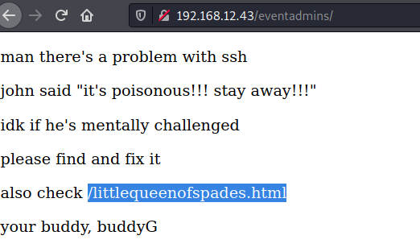
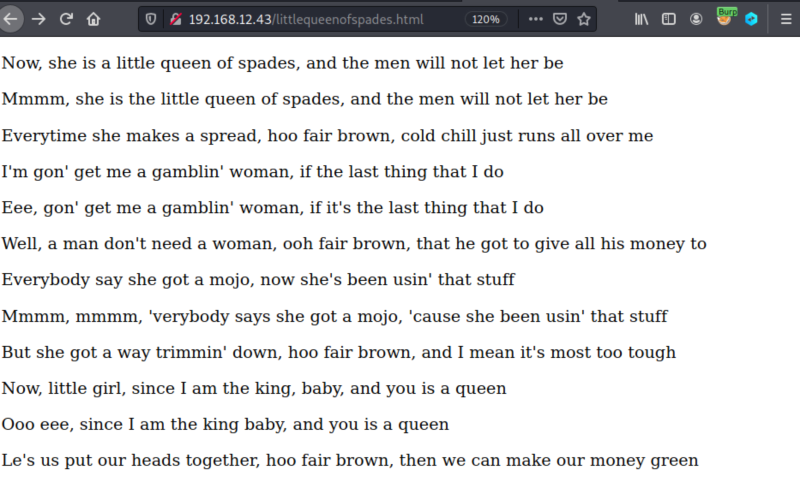
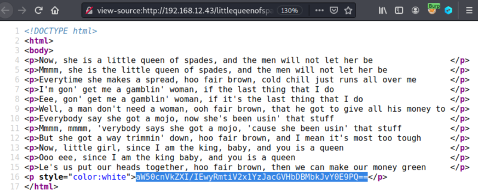

3.1 Discover hidden messages
1. Visit the route you found in the previous step http://192.168.12.43/eventadmins/.

2. There's a page you have to visit toohttp://192.168.12.43/littlequeenofspades.html.

Apparentle there's nothing interesting in the page.
3. Show the “Page source”.

There's a message that seems a “base64” encoded string.